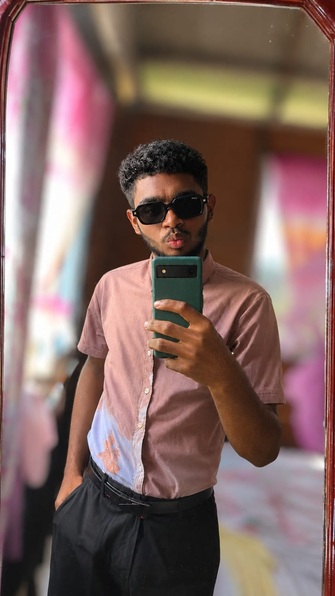

Hi, I'm Ifill Moore.
Computer Science Student • IT Educator • Aspiring Data Analyst
Exploring technology, building practical solutions, and growing my skills one project at a time.

01 / INTRODUCTION
About Me
I'm Ifill Moore, a Computer Science student with a strong interest in technology, programming, and data analysis. I also work in IT education, where I help students develop practical computer skills. I enjoy learning new technologies, solving problems, and building my knowledge in the IT field. My goal is to develop a career in data analytics and use technology to solve real-world problems.
02 / WHAT I DO
Skills & Interests
Areas I'm developing through teaching, coursework, and hands-on practice. Select a skill to learn why it matters to me.
03 / MY WORK
Selected Projects
Explore my Python projects. Select a card to try a working interactive demonstration.
04 / LOOKING AHEAD
Professional Goals
My goal is to become a Data Analyst and continue developing my skills in computer science and information technology. I want to gain more experience in programming, database management, and data analysis so I can use technology to solve real-world problems. I also hope to continue improving my knowledge and take on more challenging projects as I grow professionally.
05 / LET'S CONNECT
Let's build connections.
Interested in my work or professional journey? Connect with me on LinkedIn.
Visit my LinkedIn ↗